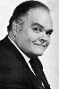

Country:United States, 62 minutes
Spoken languages:English
Genres:Horror, Sci-Fi
Director(s):Bernard L. Kowalski
Writer(s):Leo Gordon
Video Codec:Unknown
Number: 48


Certification:
Storyline:
A backwoods game warden and a local doctor discover that giant leeches are responsible for disappearances and deaths in a local swamp, but the local police don't believe them.
Cast: 

Medium: Original DVD,
Comments: Part of: 100 Greatest Horror Classics
Loaned: No
Aspect ratio: Unknown